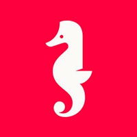
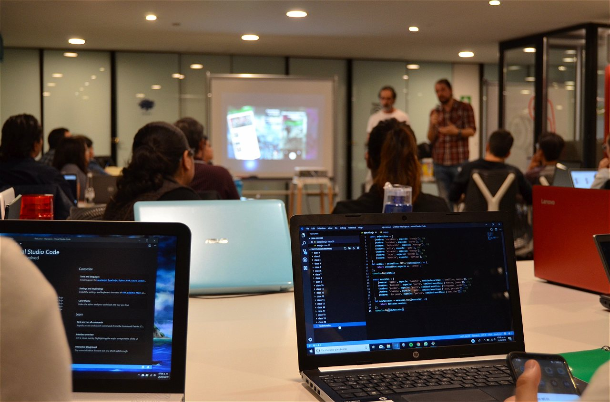

- Bootcamps are intensive courses that provide students with excellent preparation to jump into the job market. The main characteristics are the small classes and a very concentrated syllabus.
Two and a half months can go a long way. Even to learn to program from scratch and get a job in a technology company. That is the philosophy of bootcamps, intensive nine or ten week programming courses designed to provide companies with programmers trained according to the needs of the moment. The concept emerged in the United States in February 2012 and landed in Spain a year later. - During the last two decades we have seen almost everything around us change. The new condition in the era of digital transformation is to renew or die. This has made companies demand new professional profiles that barely 15 years ago did not exist.
The reason for being of the Bootcamps is to offer a totally updated training adapted to the needs of the current labor market in a few months.
Those known as millennials are no longer looking for a job for life. Quite the opposite. They want to live different experiences and get to know new sectors. But to adapt to the needs of the market, they need to specialize or update knowledge in the shortest possible time. This requirement is one of the great advantages of Bootcamps compared to masters, degrees or training cycles. - There are several companies that offer BotCamp in Peru but where your server is applying is to study at the Holberton School company that opened its doors in 2016, the most innovative companies in the market have noticed. Graduates have found jobs on LinkedIn, Google, Tesla, Docker, Apple, Dropbox, Facebook, Pinterest, Genentech, Cisco, IBM, and more.
 Holberton School también ha abierto varios campus alrededor del mundo, y uno de esos campus esta en Perú de formato virtual y su enfoque único, exitoso y escalable para la educación tecnológica ha atraído la atención de los principales inversionistas de Silicon Valley.
The school is inspired by Frances Elizabeth "Betty" Snyder Holberton (1917-2001) was one of the six programmers of the ENIAC, the first general-purpose programmable electronic digital computer, created in 1943 by the United States Army.
Betty Holberton ayudó a crear lo que luego se convertiría en el moderno desarrollo de software, participó también en la creación y el diseño de los lenguajes de programación FORTRAN y COBOL.
What exactly is a Bootcamp?
